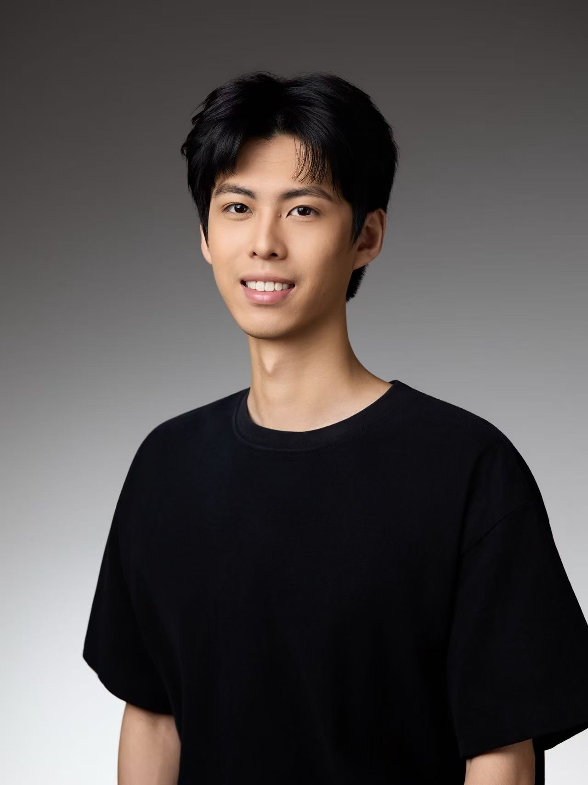

Qianshu Guo is a New York City–based composer and music technologist specializing in orchestral and hybrid scores for visual media. His work blends cinematic orchestration with electronic textures, jazz influences, and contemporary production techniques.
Drawing from a background in classical composition, jazz keyboard, and music technology, Qianshu approaches scoring through both artistic and technical perspectives. His music is characterized by rich harmonic language, detailed sound design, and emotionally driven storytelling across film, games, and multimedia projects.
Beyond media scoring, he is also passionate about pop music production and songwriting, bringing melodic sensitivity and modern sonic aesthetics into his creative work.